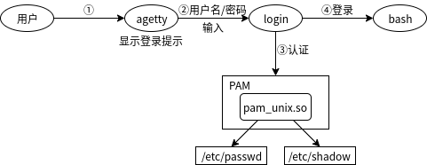

2.3 使用systemctl管理服务¶
如何管理服务¶
系统启动时的系统设置和服务管理都由systemd进行。
系统引导完成后，systemctl命令可以通过D-Bus(Desktop Bus)向系统发送消息，以执行服务启动（start）或停止（stop）等管理。
D-Bus是一种消息总线，它并行处理多个进程之间的通讯。systemd除了使用D-Bus进行通讯之外，也用于桌面应用程序之间的通讯。
systemd的配置文件在CentOS中的安装位置位于 /usr/lib/systemd/system 和 /etc/systemd/system 目录下（对于CentOS，/lib 是 /usr/lib 的软链接）。因此，您也可以通过访问 /lib/systemd/system 查看systemd的配置文件。
在Ubuntu系统环境下，systemd配置文件存放在 /lib/systemd/system 和 /etc/systemd/system 目录中。
通过执行systemctl命令，您可以查看和变更systemd配置（请参考下一节）。如果变更配置，则变更将在 /etc/systemd/system 目录中的文件生效。/etc/systemd/system 比 /lib/systemd/system 目录中的配置文件更优先生效。

使用systemctl命令管理服务¶
systemd通过单元（unit）来管理系统。单元有12中类型，服务（service）也是其中一种类型。在其他单元类型中，有在本书上一节中介绍的用于组合多个单元的目标（target）和存储设备的挂载（mount）等。
单元 |
说明 |
|---|---|
service |
服务的启动和停止 |
socket |
用于接收服务启动的套接字 |
device |
用于服务启动的设备检测 |
mount |
安装文件系统 |
automount |
自动安装文件系统 |
swap |
设置交换分区 |
target |
单元的组合 |
注解
socket是进程之间进行通讯的方式之一。关于交换分区的信息，请参考第七章。
以下是显示所有活动单元的示例，如服务和目标等：
# systemctl list-units | more
UNIT LOA
D ACTIVE SUB DESCRIPTION
proc-sys-fs-binfmt_misc.automount loa
ded active waiting Arbitrary Executable File Formats File System Automount Point
sys-devices-pci0000:00-0000:00:11.0-0000:02:03.0-ata3-host3-target3:0:0-3:0:0:0-block-sr0.device loa
ded active plugged VMware_Virtual_SATA_CDRW_Drive CentOS-8-BaseOS-x86_64
sys-devices-pci0000:00-0000:00:15.0-0000:03:00.0-host0-target0:0:0-0:0:0:0-block-sda-sda1.device loa
ded active plugged Virtual_disk EFI\x20System\x20Partition
sys-devices-pci0000:00-0000:00:15.0-0000:03:00.0-host0-target0:0:0-0:0:0:0-block-sda-sda2.device loa
ded active plugged Virtual_disk 2
sys-devices-pci0000:00-0000:00:15.0-0000:03:00.0-host0-target0:0:0-0:0:0:0-block-sda-sda3.device loa
ded active plugged LVM PV qdGEqL-yaNd-l5kw-7JbO-GUgr-34Rl-d76vDs on /dev/sda3 3
sys-devices-pci0000:00-0000:00:15.0-0000:03:00.0-host0-target0:0:0-0:0:0:0-block-sda.device loa
ded active plugged Virtual_disk
sys-devices-pci0000:00-0000:00:16.0-0000:0b:00.0-net-ens192.device loa
ded active plugged VMXNET3 Ethernet Controller
sys-devices-platform-serial8250-tty-ttyS0.device loa
ded active plugged /sys/devices/platform/serial8250/tty/ttyS0
sys-devices-platform-serial8250-tty-ttyS1.device loa
ded active plugged /sys/devices/platform/serial8250/tty/ttyS1
sys-devices-platform-serial8250-tty-ttyS2.device
...省略...
LOAD = Reflects whether the unit definition was properly loaded.
ACTIVE = The high-level unit activation state, i.e. generalization of SUB.
SUB = The low-level unit activation state, values depend on unit type.
147 loaded units listed. Pass --all to see loaded but inactive units, too.
To show all installed unit files use 'systemctl list-unit-files'.
使用systemctl命令的子命令可以修改服务的启动、停止等状态。
systemctl <server_status> <service_name>
主要的子命令如下所示：
子命令 |
说明 |
|---|---|
start |
启动（激活）单元 |
restart |
重启单元 |
stop |
停止单元 |
status |
查看单元状态 |
enable |
开机启动单元 |
disable |
关闭开机启动单元 |
isolate |
切换目标时，默认不关闭前一个目标启动的进程，isolate子命令改变这种行为，关闭前一个目标里面所有不属于后一个目标的进程 |
list-units |
显示被激活的所有单元，（子命令省略时，此子命令为默认） |
通过systemctl命令管理的主要服务如下：
服务 |
说明 |
|---|---|
udisks2 |
磁盘自动挂载服务 |
gdm |
GDM显示管理器 |
lightdm |
LightDM显示管理器 |
NetworkManager |
NetworkManager服务 |
sshd |
SSH服务 |
postfix |
Postfix邮件服务 |
httpd |
HTTP Web服务 |
以下是一个管理启动、停止服务的示例。比如启动、停止httpd（Apache Web服务器）。对于其他服务，如NetworkManager、sshd、postfix也可以使用相同方式进行管理。
# systemctl status httpd ➜ 查看httpd服务状态
● httpd.service - The Apache HTTP Server
Loaded: loaded (/usr/lib/systemd/system/httpd.service; disabled; vendor preset: disabled) ➜ ①
Active: inactive (dead) ➜ ②
Docs: man:httpd.service(8)
# systemctl start httpd ➜ 启动httpd服务
# systemctl status httpd ➜ 查看httpd服务状态
● httpd.service - The Apache HTTP Server
Loaded: loaded (/usr/lib/systemd/system/httpd.service; disabled; vendor preset: disabled) ➜ ③
Active: active (running) since Wed 2019-11-27 19:05:35 CST; 16s ago ➜ ④
Docs: man:httpd.service(8)
Main PID: 10818 (httpd)
Status: "Running, listening on: port 80"
Tasks: 213 (limit: 23630)
Memory: 47.4M
CGroup: /system.slice/httpd.service
├─10818 /usr/sbin/httpd -DFOREGROUND
├─11131 /usr/sbin/httpd -DFOREGROUND
├─11132 /usr/sbin/httpd -DFOREGROUND
├─11133 /usr/sbin/httpd -DFOREGROUND
└─11134 /usr/sbin/httpd -DFOREGROUND
...忽略...
# systemctl enable httpd
Created symlink /etc/systemd/system/multi-user.target.wants/httpd.service → /usr/lib/systemd/system/httpd.service. ➜ ⑤
# systemctl status httpd
● httpd.service - The Apache HTTP Server
Loaded: loaded (/usr/lib/systemd/system/httpd.service; enabled; vendor preset: disabled) ➜ ⑥
Active: active (running) since Wed 2019-11-27 19:05:35 CST; 35s ago
Docs: man:httpd.service(8)
Main PID: 10818 (httpd)
Status: "Running, listening on: port 80"
...忽略...
①disabled禁用
②inactive没有启动
③disabled禁用
④active启动
⑤在multi-user.target.wants目录下创建了与httpd.service配置文件的软链接
⑥enabled启用
服务配置文件和选项¶
服务配置文件主要在 /etc/lib/systemd/system 目录下以 “服务名称.service” 的命名方式放置的。
根据服务配置文件的选项，可以指定要启动的服务程序和用于停止服务的方式。
选项 |
说明 |
|---|---|
ExecStart |
指定启动程序的命令加上必要的参数且使用绝对路径。例如httpd.service，ExecStart=/usr/bin/httpd $OPTIONS -DFOREGROUND |
ExecReload |
在绝对路径中指定用于重新加载配置文件的命令。例如httpd.service，ExecReload=/usr/sbin/httpd $OPTIONS -k graceful |
ExecStop |
指定停止程序的命令加上必要的参数且使用绝对路径。例如httpd.service，ExecStop=/bin/kill -WINCH ${MAINPID} |
# cat /lib/systemd/system/httpd.service
...省略...
[Unit]
Description=The Apache HTTP Server
Wants=httpd-init.service
After=network.target remote-fs.target nss-lookup.target httpd-init.service
Documentation=man:httpd.service(8)
[Service]
Type=notify
Environment=LANG=C
ExecStart=/usr/sbin/httpd $OPTIONS -DFOREGROUND
ExecReload=/usr/sbin/httpd $OPTIONS -k graceful
# Send SIGWINCH for graceful stop
KillSignal=SIGWINCH
KillMode=mixed
PrivateTmp=true
[Install]
WantedBy=multi-user.target
WantedBy=multi-user.target 指定的含义是，当使用systemctl命令的enable子命令将httpd.service服务设为开机启动时，httpd.service配置文件将会软连接到 /etc/systemd/systemd/multi-user.target.wants 目录下。执行子命令disable软连接将会被删除。
systemctl命令中无法更改配置的重要服务¶
在systemd启动系统之前的初期阶段启动的两个服务是sysinit.target和systemd-journald.service，另外在multi-user.target之前启动的服务是logind.service。
注解
关于sysinit.target和multi-user.target的执行时机，请参考本章的“systemd”。
# ps -ef | grep -e journald -e udevd -e logind
root 744 1 0 11月26 ? 00:00:00 /usr/lib/systemd/systemd-journald
root 780 1 0 11月26 ? 00:00:00 /usr/lib/systemd/systemd-udevd
root 1009 1 0 11月26 ? 00:00:00 /usr/lib/systemd/systemd-logind
注解
systemd-journald.service参考本书第六章。
systemd-udevd服务¶
systemd-udevd.service服务是一个用于动态创建和删除/dev目录下的用于访问设备的链接文件的服务。
内核在系统启动时或运行时，将检测到的链接或阻断的设备反映再/sys目录下的设备信息文件中，并将uevent的信息发送给system-udevd服务。
systemd-udevd守护进程在收到uevent时获取/sys目录下的设备信息，删除/etc/udev/rules.d和/lib/udev/rules.d目录下的.rules文件中描述设备创建规则在/dev目录下创建设备文件。
此机制不要求管理员手动创建或删除设备文件。
注解
“守护进程”（daemon）用于在系统上持续运行，并为客户端提供服务和系统管理服务。守护进程包括一个称为服务器的守护程序，该守护程序将服务提供给客户端，例如httpd和sshd，它提供了一种守护进程，它提供了一种用于系统管理的服务，如udevd。许多守护进程在程序名的末尾带有表示守护进程的“d”。

/lib/udev/rules.d目录
包含描述默认UDEV规则的文件。如果要自定义规则，请编辑/etc/udev/rules.d目录下的文件，而不是该目录下的文件。
/etc/udev/rules.d目录
将部署描述定制的UDEV规则的文件。如果管理员要自定义UDEV规则，请编辑此目录下的文件。
systemd-logind服务¶
systemd-logind.service是管理用户登录的服务。跟踪用户会话，跟踪会话中生成的流程，基于PolicyKit的授权，以及对设备的访问权限，用于关闭、睡眠操作。PolicyKit是针对GNOME等图形环境下的操作，以/etc/polkit-1/rules.d/和/usr/share/polkit-1/rules.d/下的规则文件中定义的规则为基础进行认可的服务。PolicyKit的服务（polkit.service）由于polkitd守护进程提供。
以下是显示管理器为gdm时登录顺序的概略图。gdm参照systemd-logind守护进程，systemd-logind守护进程通过D-Bus参照从polkit.service（PolicyKit服务）启动的polkitd守护进程。

lightdm等其他显示管理器的情况也会使用类似的序列。
以下是以多用户模式（multi-user.target）启动时从虚拟终端（例如/dev/tty1）登录的序列。由于传统的序列（如agetty和login）在此序列中不会直接引用systemd-login服务。systemd-logind守护进程监视内核模拟文件系统/sys，以跟踪用户会话跟踪和会话中生成的进程。此外，在multi-user.target的情况下，polkit.service停止。
